United States (US)
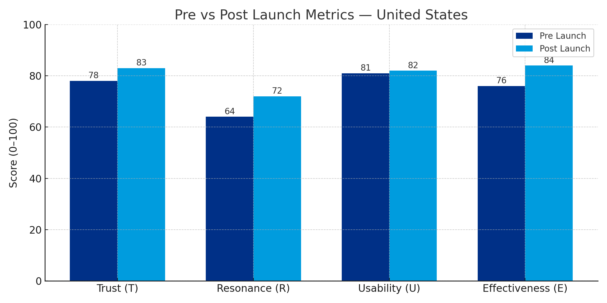
- Trust Significant 78 → 83
- Resonance Significant 64 → 72
- Usability Slight 81 → 82
- Effectiveness Significant 76 → 84
Building a continuous listening system for PayPal Everywhere across the US and Germany.
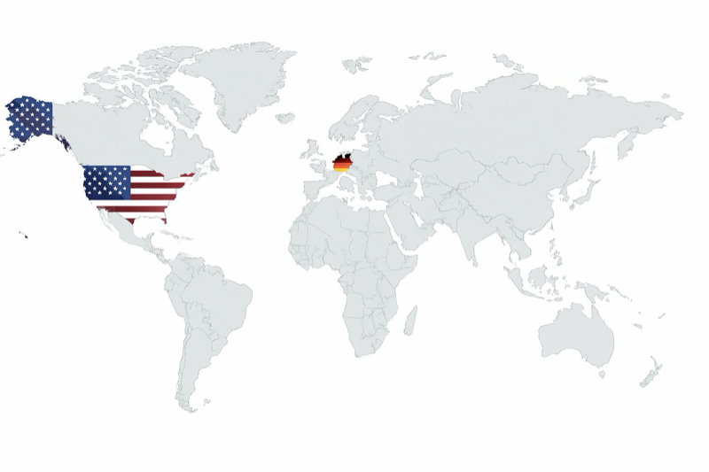
PayPal app was undergoing a major redesign but the team didn't know whether the changes were actually going to improve transaction success and feature adoption, or introducing friction that could impact retention. We needed to understand how the redesign affected trust, usability, and transaction behavior across markets.
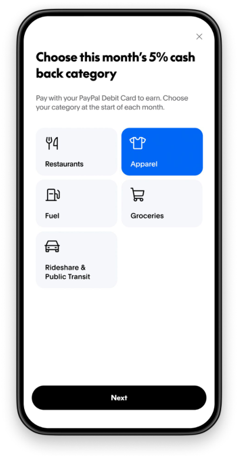
Pre/post survey design · historical VoC
US + Germany rollout · live in-app listening starts
Live surveys · UnitQ · Lighthouse Analytics
Quant analysis · composite metric · roadmap
I was the sole UX researcher on the program and owned all quantitative data collection — survey design, in-app listening, the UnitQ and Lighthouse monitoring, and the R analysis behind the composite metric. Every number on this page traces back to work I ran myself.
This framework reduced time-to-insight and was adopted for 2 subsequent market launches.
Pre-launch surveys + Historical VoC data
Decision: Success criteria
Post-launch surveys + open-text feedback
Decision: Prioritized fixes
Live surveys + UnitQ dashboards + Lighthouse Analytics
Decision: Weekly adjustments
The same redesign, measured the same way in both markets. Each panel pairs a market's pre/post movement with the shifts it created — read one panel down for a market's story, then read across to compare.

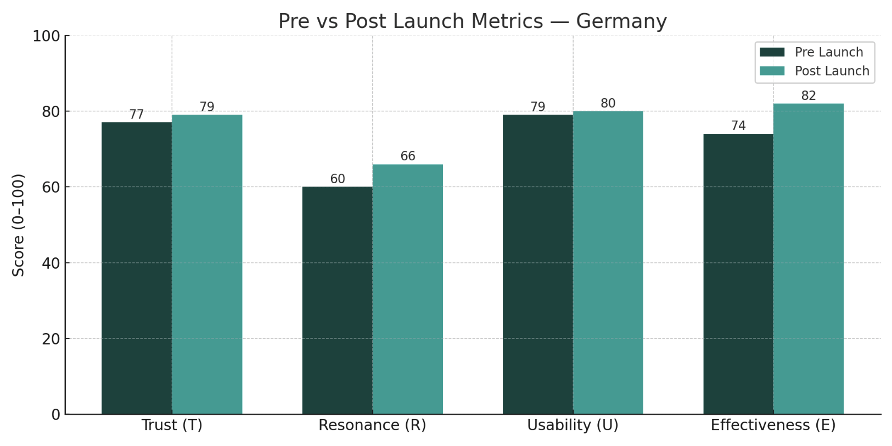
How to read these numbers: Δ = post − pre on a 0–100 scale — Significant = 5+ points, Slight = 1–4 — and each market is compared against its own pre-launch baseline.
Functional adoption lagged behind emotional adoption, risking transaction volume and retention. Value prop resonated, but reliability (NFC/login) and transparency (FX) issues limited new feature adoption.
How post-launch signals moved from observation to product & design changes — across three listening channels that ran in parallel.
From "Measure what happened after launch" to "Continuously understand how the experience evolves in the real world."
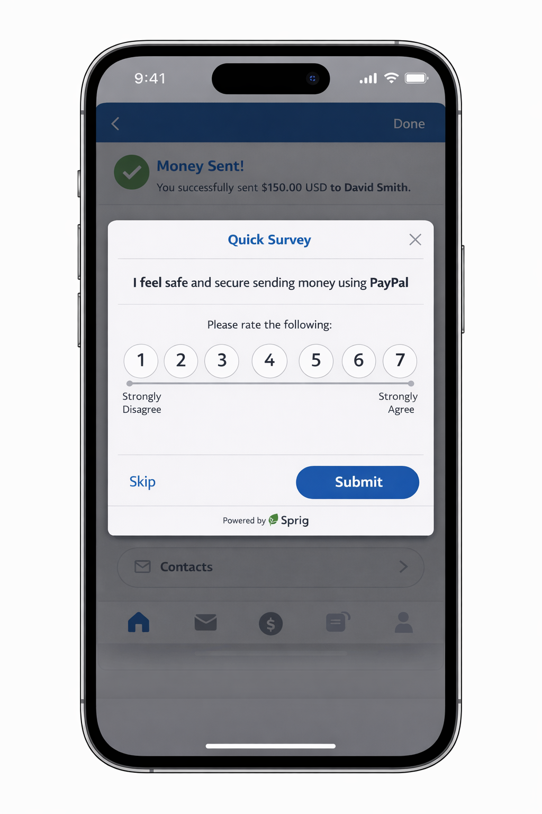
Short surveys triggered inside the app — during onboarding and at key feature-use moments — so feedback came from the live flow rather than from a recalled task.
OutputLive usability scores · login and NFC friction · ↓ notification complaints
UnitQ brought social mentions, app-store reviews, support contacts and other voice-of-customer data into one unsolicited stream, segmented by theme and market.
OutputComplaint volume by theme — transfers, notifications, NFC · sentiment by market
Lighthouse Analytics tracked what people actually did — send / request completion, drop-off points, Debit Card and NFC adoption.
OutputFunnel completion and drop-off · feature adoption · ↑ early task-success signals
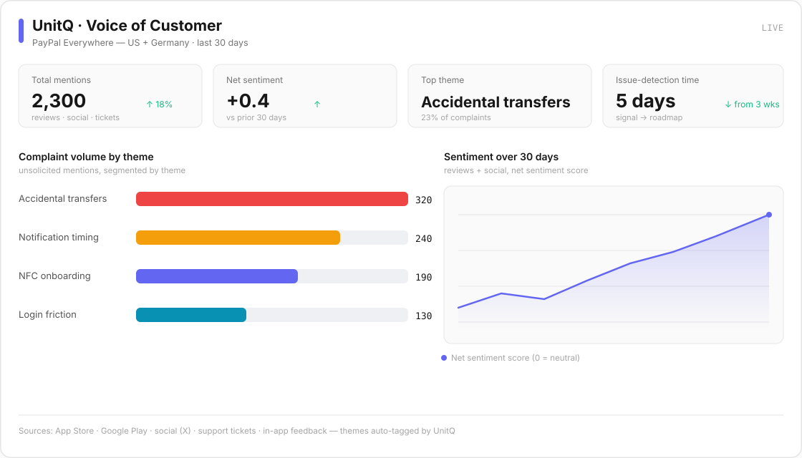
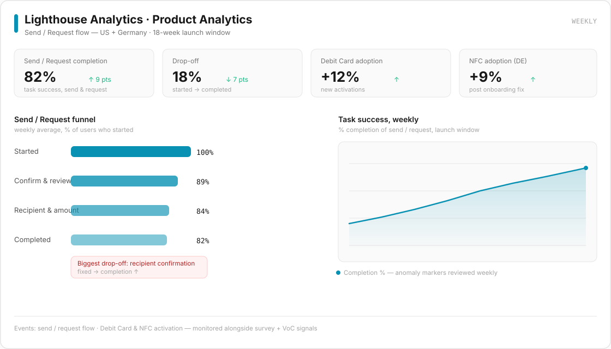
Read together, not in isolation. A theme only reached the roadmap once it showed up in more than one stream — a single-source spike was logged as an anomaly to monitor, not acted on its own.
Three findings that shaped the US roadmap — each with the fix it drove and the impact it moved.
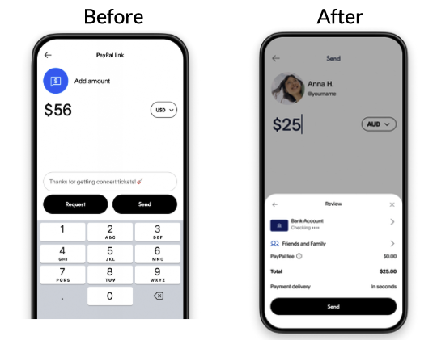
Transfer-state ambiguity caused accidental transfers.
FixClearer confirmation screens + explicit “Received / Processing” states
Result↓ accidental-transfer complaints · ↑ P2P recovery
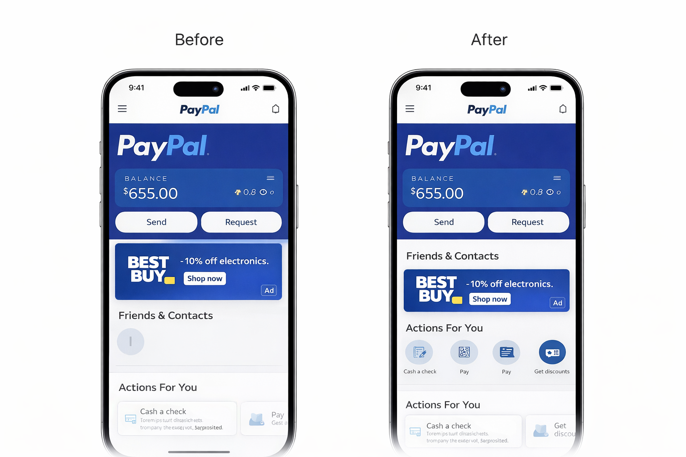
Ads and cluttered navigation slowed users down.
FixLower ad-tile density; promos moved away from core tasks
Result↓ navigation complaints · ↑ task success in send / request
Poorly timed, unclear notifications created noise.
FixRedesigned notification logic; better timing & relevance
Result↓ notification complaints · ↓ support load
Three findings that shaped the DE roadmap — each with the fix it drove and the impact it moved.
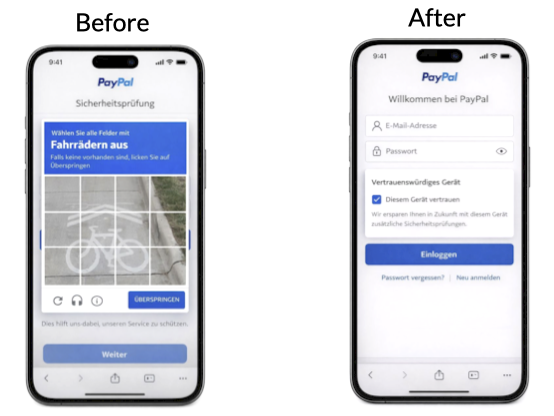
Users got stuck in verification during login.
FixAdded “Trusted Device” option + fixed Captcha loop
Result↓ login friction · ↑ app usage & retention
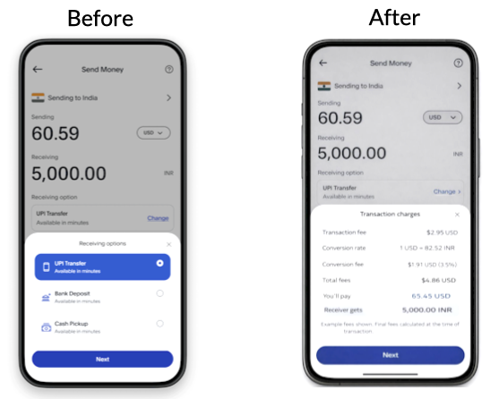
Users were unclear about conversions and fees.
FixImproved confirmation transparency + clearer FX/fee display
Result↑ FX transfer conversions · ↓ drop-off rate
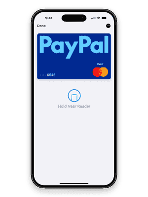
NFC onboarding failures and safety suspicions.
FixStabilized NFC flow + clearer steps & FAQs
ResultNFC complaints 200 → 3 in three months (App Reviews + Live survey)
Four driver scores — Trust, Resonance, Usability and Effectiveness — rolled up into one 0–100 UX-health score, giving product teams a single number to track and a shared language for prioritizing fixes.
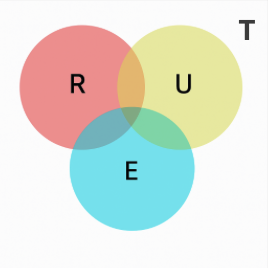
Decisions informed: Reliability-first roadmap for NFC + verification, Accidental transfers, and FX transparency.
HowPCA derives each dimension's weight → weighted average → standardized to 0–100.
WhyOne unified UX-health KPI, comparable across markets and segments.
ImpactFaster anomaly detection · consistent tracking · adopted by 3 markets as a shared KPI.
Built in UnitQ and Lighthouse Analytics for cross-market health monitoring
Composite Metric adopted by 3 markets (e.g., UK)
From "one-time measurement" to "continuous listening"
Created pre/post-launch and live survey templates, reducing setup time for other markets